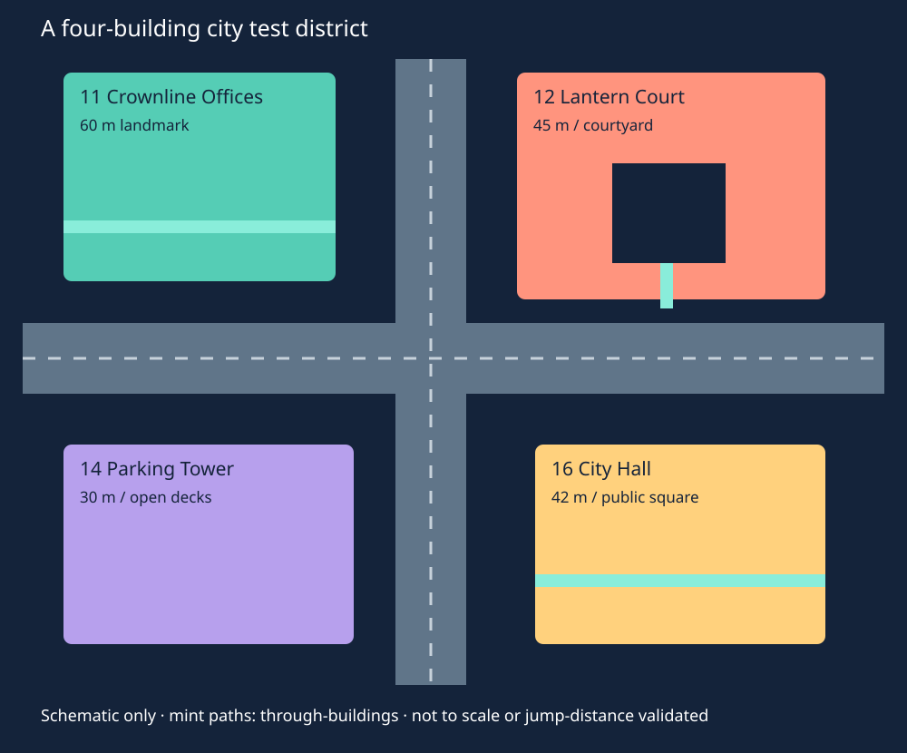

Deadly Jenga · City-building concepts 11–20 · 25 October 2026
A city made of
playable buildings.
Ten new families with recognizable office, apartment, hotel, parking, civic and industrial identities. They keep the large-section physics approach, but use street entrances, repeated bays, rooflines and deliberately shaped voids to read as an urban district. Each image pairs a full exterior with a closer view of a usable open or sheltered space.
Concepts, not implemented maps. The twenty views are built-in imagegen illustrations in ten paired images. They are not Unity captures, dimensionally reliable plans or physics results. The written proposals govern where supports, floor openings, pads and clear climbing surfaces must go. Railings, planting, lights, background buildings and street props in the art are illustrative visual dressing, not an instruction to add matching physics objects. No new tower was simulated.
All ten paired images at a glance · Download pictures and study · Exact image prompts
What makes this set feel more like a city
A base, a middle and a top. A public portico or loading court meets the street, a consistent rhythm explains the occupied floors, and a roof or crown gives the building a recognizable silhouette. These large cues can carry the identity without small brickwork or a wall of individual window objects.
Give the voids an architectural role. An apartment courtyard, a hotel atrium, a parking deck, a concourse and a roofed civic square all count as interiors or urban spaces even though much of their boundary remains open. The aim is a mix of deep alcoves, sheltered halls, visible upper floors and clear outward views, rather than an entirely sealed building or an entirely exposed scaffold.
Use streets and shared edges. Entrances should face a connected street, podiums should offer through-passages, and roof heights should vary. An occasional high bridge is valuable, but an entire city joined only by identical skywalks would recreate the repetitive festival problem.
Research translated into game spaces
Herzog & de Meuron describes 1111 Lincoln Road as a fully open concrete structure. It is a useful precedent for an urban-looking building whose slabs, supports and generous openings are the architecture; enclosed rooms are not required for city identity. The parking proposal borrows that openness, not the real building's engineering as a proof of loose-stack stability. Herzog & de Meuron — 1111 Lincoln Road.
Safdie's Sky Habitat combines homes, terraces and shared outdoor space. MVRDV's Valley offers another reference for contrasting a city-facing building mass with more open, irregular occupied space. The apartment and garden proposals translate those ideas into a few repeated, balanced game sections; they do not assume real-world ties or cantilevers exist in the loose physics assembly. Safdie Architects — Sky Habitat · MVRDV — Valley.
SOM's Manhattan West project includes a carved-out elevated breezeway extending public space through a building. That informs the office podium and exchange: a passage through the base can help make a city connected and legible. AHMM's White Collar Factory is a reference for a flexible work-building identity expressed through generous structural space. SOM — Manhattan West, public space and breezeway · AHMM — White Collar Factory.
MVRDV's Frøsilo reuses silo structures as the core of housing. Here the utility-tower silhouette is reinterpreted as a hollow playable crown on open supports. It is an analogy for useful occupied space in an industrial form, not a claim that the proposed water tower duplicates that project. MVRDV — Frøsilo.
Physics and movement rules retained
- Several floors per moving section. Integrate piers, structural walls, stairs and landings into each cassette, then separate meaningful story bands and a few supports. A window bay or decorative clock hand does not need its own Rigidbody.
- Use actual bearing lines. A tower above a concourse must load the piers below. A skybridge is a loose supported route unless an explicit connection is designed; it cannot be silently counted as a tensile brace.
- Keep designated climb faces clear. Floors, balconies, cornices and rails must stay behind the chosen rib's climbing plane. Broad setback roofs should be explicit top-out/rest locations. The art is not a clearance test.
- Reserve stairs' floor openings. Include a flat pad before turning at both ends of each flight. Test with the real capsule; the current motor's default step offset is only 2.5 cm at player scale 0.5, so apparently minor slab lips matter.
- Preserve meaningful wall-backed cover. Open space does not require every floor to be exposed from every direction. A few broad panels and deep alcoves create contrast without many little rooms.
- Plan a damaged building as another playspace. Leave side exits and space for a large section to tilt. A convenient new ramp or a bridge landing is a hypothesis to test, not a guaranteed collapse animation.
- Keep the image's dressing out of the physics budget. Rail details, planting, lane paint and window shading can be visual-only. Do not add a live light or a collider for every small feature shown by the artist.
Early authoring allowances
Body and collider ranges are provisional authoring allowances for the entire named building or complex, including stairs and bearings. They are not counts from constructed assets or FPS predictions. Paired buildings and the station are budgeted as whole complexes. Heights are nominal study targets; image generation does not enforce floor counts or exact scale.
These proposals generally use fewer large structural parts rather than independently simulated facades. That trades some fine-grained destruction for traversable interiors and clearer collapse bands. Many colliders can still make a small number of bodies expensive. The previous Foundry measurements also showed substantial bot-planning cost, so no FPS or Quest-readiness claim follows from these allowances.
Lower–medium prototype risk · 60 m study height
11 Crownline Offices

AI concept art, not a screenshot or measured collision plan. Click to enlarge both views.
City identity
A stepped downtown office tower: broad street podium, regular window bays, narrower upper tiers and a compact crown.
Open and sheltered space
The bottom two levels form an open columned lobby and cross-block passage. Every fourth level opens into a recessed office terrace; large unglazed bays reveal the usable floors without making the whole tower a bare rack.
Physical section strategy
Use three- or four-floor box-frame sections, with columns stacked directly above columns. Keep each setback over a broad lower seat. Upper stages narrow rather than balancing on decorative overhangs; a few loose bearing shoes define meaningful failure bands.
Movement
A switchback at the rear and a straight clear climb rib on one side reach the crown. Terrace floors stop inside the climb plane. The open lobby has two street exits and does not funnel everyone through one doorway.
How damage changes the building
An upper tier can unseat while the podium remains a covered street. A fallen office section makes a boxy tunnel and roof ramp; keep enough space beside the tower for that section to land.
Keeping the cost controlled
City identity comes mostly from silhouette and large facade openings. Window recess shading and a crown pattern belong in the visual mesh; avoid individual window colliders and a loose brick facade.
First prototype checks
Test the podium carrying a single loaded office section, a player moving through both lobby exits, and loss of each setback shoe. Check the full climb strip against every decorative floor band.
Architectural references for spatial ideas, not proof of loose-block stability: SOM — Manhattan West, public space and breezeway · AHMM — White Collar Factory
Medium prototype risk · 45 m study height
12 Lantern Court Apartments

AI concept art, not a screenshot or measured collision plan. Click to enlarge both views.
City identity
A U-shaped apartment block around a tall courtyard, with repeated residential bays, a street arch and a recognizable stepped roofline.
Open and sheltered space
Most of the central space is an outdoor courtyard. Open galleries face inward; a few deep alcoves provide enclosed-feeling rooms without furnishing hundreds of apartments. The street arch reveals activity inside.
Physical section strategy
Build three independently bearing wings from three-floor L or straight cassettes. Short loose gallery bridges join selected floors. The wings need their own broad feet; a bridge is a traversable connection, not an assumed tensile brace holding a wing upright.
Movement
Two corner stairs serve opposite sides of the court, with optional bridges, short drops and courtyard climbs between them. Use recessed loggias rather than repeated outward balcony shelves on the designated climbing faces.
How damage changes the building
Losing a gallery bridge breaks a shortcut while the corner stairs remain. A tipped wing can span part of the courtyard, converting it into a layered covered passage instead of erasing the whole building at once.
Keeping the cost controlled
The U plan has more parts than a single slab but offers excellent useful space. Group walls and galleries per cassette, and use a few repeated large bay shapes. Keep garden dressing sparse and visual-only.
First prototype checks
Test each wing alone, then the U with bridges. Walk all routes around the court before and after removing one bridge. Check that a fallen wing leaves at least one outward escape.
Architectural references for spatial ideas, not proof of loose-block stability: Safdie Architects — Sky Habitat · MVRDV — Valley
Medium prototype risk · 54 m study height
13 Split Atrium Hotel

AI concept art, not a screenshot or measured collision plan. Click to enlarge both views.
City identity
Two hotel wings flank a narrow atrium, with a broad arrival canopy, repeated room-sized bays and a shared rooftop lounge silhouette.
Open and sheltered space
The atrium extends vertically through the hotel, alternating sheltered landings and open sky courts. Several rooms are represented by deep open bays; the central void carries the drama instead of many tiny corridors.
Physical section strategy
Each wing is a stack of independently stable four-floor frame sections. Cross-bridges sit on broad end bearings and may be lost separately. Keep the entry canopy a large integral or simply supported piece, not many small attached tiles.
Movement
A stair in each wing connects frequent landings, with three broad crossover bridges at differing heights. Give both halves a street exit; losing a bridge must not make the hotel a one-way dead end.
How damage changes the building
One crossover may fall into the atrium and become a sloping route to a lower floor. A wing can tilt away while the other stays usable. A collapse into the courtyard is a risk to test, not a promised convenient bridge.
Keeping the cost controlled
Repeated bays can be mostly render detail around a small number of collision walls. Do not create physics hotel doors, beds or glass panes merely to explain the building type.
First prototype checks
Check both wings without the crossover pieces, every bridge-to-floor transition, and safe exits when the lowest bridge is removed. Test debris accumulation in the atrium.
Architectural references for spatial ideas, not proof of loose-block stability: Safdie Architects — Sky Habitat · SOM — Manhattan West, public space and breezeway
Lower–medium prototype risk · 30 m study height
14 Switchback Parking Tower

AI concept art, not a screenshot or measured collision plan. Click to enlarge both views.
City identity
An unmistakable open parking garage: broad rectangular decks, sturdy columns, a ramp visibly rising between floors and an oversized top-deck opening.
Open and sheltered space
The sides remain mostly open, with occasional broad solid panels for cover. Double-height pockets and corner cutouts keep it from reading as an identical stack of pancakes. Cars are not needed for its identity or gameplay.
Physical section strategy
Use two-floor deck-and-pier sections supported on aligned piers. Integrate paired ramp flights and their flat upper/lower pads into each section. The transition between sections must include the ramp opening rather than putting a solid slab across it.
Movement
The wide vehicle-style ramps are the easy route. A compact corner stair/climb spine is a shorter alternative. Open edges create controlled drop choices and views onto neighboring streets.
How damage changes the building
A tilted two-floor section becomes a large incline with cover underneath. Removing one section can expose a lower deck or connect the garage to a street-level ruin.
Keeping the cost controlled
A relatively economical city filler: flat decks and large piers can use simple boxes. Low body count still needs contact profiling where decks stack. Painted lane markings stay in materials, not separate objects or colliders.
First prototype checks
Walk both directions on every ramp and around each turn, especially at small height changes. Compare one, three and five two-floor sections under lateral impacts. Verify an underside does not block the ascending route.
Architectural references for spatial ideas, not proof of loose-block stability: Herzog & de Meuron — 1111 Lincoln Road
Medium–high prototype risk · 48 m study height
15 Central Exchange

AI concept art, not a screenshot or measured collision plan. Click to enlarge both views.
City identity
A transit-station concourse with two unequal office towers: a long low hall anchors the street while the towers provide a familiar city skyline.
Open and sheltered space
A large covered pedestrian concourse runs through the podium. Raised platform-like streets and a mezzanine overlook it; there are multiple entrances from the surrounding blocks. No simulated trains are required.
Physical section strategy
Make the concourse roof a deep, inhabited transfer frame supported on broad pier pairs. Put tower bearing lines over those piers, not on the unsupported middle of a decorative canopy. Segment the hall into a few long rigid sections with separate tower stacks.
Movement
Wide concourse ramps reach a mezzanine and split toward the two tower stairs. Keep a street-level path independent of the towers, and connect surrounding blocks at low and mid-height rather than only at the roofs.
How damage changes the building
A hall section may settle into a covered ramp while a tower remains. Tower debris can close one entrance and open a new street crossing. The concourse must retain alternate exits around potential fall zones.
Keeping the cost controlled
The long hall can touch many other pieces and wake a large assembly. It is an anchor building to use once, not a cheap repeated filler. Tracks and information panels should be visual cues only.
First prototype checks
Load a single transfer frame with the intended tower mass before building the complex. Test bearing alignment, hall exits, loss of one pier and the largest plausible tower fall into the concourse.
Architectural references for spatial ideas, not proof of loose-block stability: SOM — Manhattan West, public space and breezeway · Herzog & de Meuron — 1111 Lincoln Road
Lower–medium prototype risk · 42 m study height
16 Lantern City Hall

AI concept art, not a screenshot or measured collision plan. Click to enlarge both views.
City identity
A civic hall with a broad arcade, a taller square clock/lantern tower and a stepped ceremonial roof. It reads as a town landmark without needing realistic historic ornament.
Open and sheltered space
The lower hall is a roofed public square between large piers. Open upper galleries look into it, and the tower has an airy lantern room at its top. Some upper rooms remain wall-backed to create contrast with the plaza.
Physical section strategy
Use a few deep hall frames and a separate broadly seated tower stack. The clock is a visual face on a large wall section; its hands and trim do not become physics parts. Any arch-like opening can be cut into a rigid compound section instead of assembled from many loose voussoirs.
Movement
Two broad side stairs connect the public square to galleries. One continues into the clock tower, while an exterior clear climb rib offers the quick route. The plaza stays traversable when an upper gallery is lost.
How damage changes the building
An arcade frame can become a covered obstacle across the square. The clock tower may lose an upper band independently of the public hall, producing a memorable skyline change without flattening all civic space.
Keeping the cost controlled
Big entrances, roofline and a clock graphic establish identity cheaply. Avoid masonry-by-brick construction and a mechanically simulated clock. Use readable low-frequency forms.
First prototype checks
Test the tower's own base separately from the hall roof; it must not rely on a thin decorative canopy. Walk both plaza exits and verify top-out at the lantern room.
Architectural references for spatial ideas, not proof of loose-block stability: SOM — Manhattan West, public space and breezeway · AHMM — White Collar Factory
Lower–medium prototype risk · 39 m study height
17 Foundry Lofts

AI concept art, not a screenshot or measured collision plan. Click to enlarge both views.
City identity
A tall converted factory or warehouse: large repetitive window bays, deep floor plates, a sawtooth roof and a compact rooftop service box.
Open and sheltered space
Use lofty two-storey work halls, missing facade bays and a central loading court. The facade has enough solid piers and wall-backed alcoves to read as a building, with generous open areas between them.
Physical section strategy
Build three-floor factory cassettes with deep perimeter ribs and a limited number of interior piers. Roof sawteeth are a few integral angled surfaces, not many loose panels. Keep load lines aligned through the open loading level.
Movement
A broad loading ramp connects the street to the first raised hall. Internal switchbacks link work floors; the loading court provides a climb/drop shortcut with frequent rest ledges inside the wall plane.
How damage changes the building
A factory cassette can tip into a long covered workshop ruin. A roof section may slide onto a neighboring terrace, while the loading court changes from a void into layered cover.
Keeping the cost controlled
The appearance of brick or ribbed cladding can live entirely in a shared material. Do not turn every apparent window mullion or sawtooth roof strip into a separate collider.
First prototype checks
Check loading-ramp clearance, the undercut ground floor carrying the complete stack, and a fallen cassette's side exits. Test roof pieces without adding tiny loose debris.
Architectural references for spatial ideas, not proof of loose-block stability: AHMM — White Collar Factory · Herzog & de Meuron — 1111 Lincoln Road
Medium prototype risk · 60 m study height
18 Skygarden Residences

AI concept art, not a screenshot or measured collision plan. Click to enlarge both views.
City identity
A residential tower with two offset-looking shoulders, deep recessed loggias and occasional shared sky gardens, ending in a stepped residential crown.
Open and sheltered space
Large terrace courts replace selected floors in the silhouette. Open loggias and a few bridges provide glimpses through the building while other broad facade panels keep the apartment-tower identity.
Physical section strategy
Create the apparent irregularity with a small family of balanced three-floor sections. Keep upper mass over actual bearing lines; an attractive offset cannot be credited as stable merely because a real-world precedent uses structural ties.
Movement
A reliable inner stair crosses garden courts at rest levels. An outside climb strip stays continuous and slightly proud of recessed balcony edges. Selected short bridges let players change shoulder without forcing everyone onto the same path.
How damage changes the building
One shoulder section can tilt into a garden court and create a new sloped connection, while the other shoulder retains a route. Do not design every terrace as a debris-catching bowl.
Keeping the cost controlled
Variety should come from reusing three or four section shapes, not unique physics geometry at every floor. Trees, planters and rail details are sparse visual dressing; use broad openings instead of many small rail colliders.
First prototype checks
Check every upper sub-stack's centre of mass, every balcony band along the climb route, and escape from a partially filled sky court. Test without any visual planting to confirm the gray box still reads and plays clearly.
Architectural references for spatial ideas, not proof of loose-block stability: Safdie Architects — Sky Habitat · MVRDV — Valley
Medium prototype risk · 42 m study height
19 Harbor Waterworks

AI concept art, not a screenshot or measured collision plan. Click to enlarge both views.
City identity
A city utility water tower: a broad faceted tank-like crown on a strong open support stage, with a service stair and an accessible lookout level.
Open and sheltered space
The support stage is an open vertical pavilion with intermediate landings. The tank silhouette contains an accessible hollow gallery and a large open service court rather than a solid inaccessible ball.
Physical section strategy
Use one or two deep tied support sections under a hollow tank section. The upper body needs a broad annular or multi-point bearing. Model the tank with a small number of faceted convex parts; water is an optional visual surface, not a new fluid simulation.
Movement
A stair wraps within the open supports, with flat rests. A separate vertical service rib supplies the climb route. An opening in the crown leads to a flat lookout gallery without a sharp overhanging lip.
How damage changes the building
An unseated tank can tip into a large hollow shelter or bridge between nearby low roofs. Its fall corridor must be planned; a round-looking body can roll and trap players if the escape openings are too small.
Keeping the cost controlled
A memorable industrial marker from relatively few large shapes. A faceted tank is simpler than a smooth concave shell, but its hollow interior still needs multiple colliders. Avoid simulated pipes and railings.
First prototype checks
Test the support frame with the complete tank mass, entry into the crown, and side exits with the tank resting on different facets. Profile a toppled tank containing representative debris.
Architectural references for spatial ideas, not proof of loose-block stability: MVRDV — Frøsilo · AHMM — White Collar Factory
Medium–high prototype risk · 66 m study height
20 Gateway Headquarters

AI concept art, not a screenshot or measured collision plan. Click to enlarge both views.
City identity
Two substantial office towers frame a city avenue and share a high two-floor bridge building, creating a recognizable corporate gateway silhouette.
Open and sheltered space
A broad street remains open between the towers. Lower porticos, mid-height courts and the inhabited skybridge supply sheltered and open spaces at several heights, not just a distant rooftop connection.
Physical section strategy
Both towers must stand independently. The skybridge is a rigid inhabited bar resting on wide end seats; it is not an invisible structural tie. Keep its loads over tower support lines and allow a comprehensible loss-of-bearing event.
Movement
Separate stairs in each tower reach multiple crossover opportunities at lower levels and the upper bridge. Provide a route to each side's roof if the bridge is gone. Street-level traversal remains independent of the high connection.
How damage changes the building
A bridge can lose one seat, swing or slide under ordinary contact, then rest on a deliberately positioned lower roof or fall into the avenue. Its convenient landing is a test goal, not guaranteed physics. One tower can survive the other's failure.
Keeping the cost controlled
This is an entire paired landmark complex, so its budget is higher than one filler building. Use it once as a skyline anchor. No long chains of suspension joints are needed for the first loose-bearing prototype.
First prototype checks
Prove each tower alone, then one supported bridge. Test loss of each seat and impact at midspan, every bridge transition, and whether the avenue has exits outside the largest falling-piece sweep.
Architectural references for spatial ideas, not proof of loose-block stability: Safdie Architects — Sky Habitat · SOM — Manhattan West, public space and breezeway
How I would compose the first city district
Start with Crownline Offices, Lantern Court Apartments, Switchback Parking Tower and Lantern City Hall. Use the offices as the tallest landmark, the apartment court as a residential block, the parking deck as an open movement playground and City Hall as a public-space anchor. Their nominal heights of 60, 45, 30 and 42 m give a more varied roofline than four equal-height towers.

That four-building selection has a combined provisional allowance of 84–136 moving bodies and 640–1,040 collision shapes. This is arithmetic on the design ranges, not a measured implementation. Leave room for streets, useful fallen sections and sightlines rather than filling every gap with another high-rise.
Then add Foundry Lofts and Harbor Waterworks along one edge to create an industrial/waterfront district. The hotel can form a denser mid-rise block. Use either Central Exchange or Gateway Headquarters as a major additional anchor after profiling; starting with both large complexes could overpopulate the scene.
Connect at multiple scales: through-passages at ground level, occasional short crossings around lower roofs, and one memorable higher bridge. Jump and drop distances must be measured with the selected movement rules before placing the final streets. The sketch deliberately makes no jump-distance claim.
The minimum useful prototype pass
- Build one two- to four-floor section with its actual bays, stair opening, pads and collision. Confirm the gray box is useful without facade art.
- Test its real mass and centre of mass on intended bearing patches, then two sections stacked. Check the entire upper assembly at every separable band.
- Walk stairs in both directions, test top-outs and every climbing band, and test passing/escaping with more than one character.
- Remove or displace one support and inspect several plausible damaged states. A courtyard full of trapped players or continuously jittering debris is a failed version, even if the screenshot looks good.
- Only then increase height, populate bots and compare quiet and tsunami runs with consistent settings. Test on Quest before approving a device budget.
No Unity box, lane, scene, Core contract, project setting or package was changed for this study. The additions are confined to ArtDirection/CityTowerStudy-20261025.